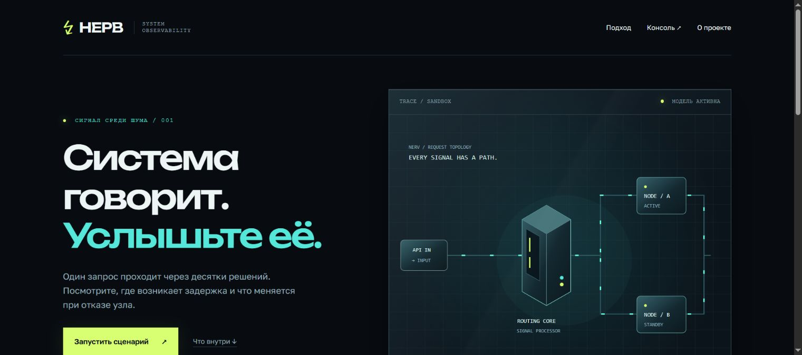

Механический этюд / Fabrestra01—03
Из задачи — в рабочую вещь.

Разрозненные заявки. Сначала выясняем, что должно работать.
Три сцены: нажми на этап или прокрути страницу. Без автоматического повтора.
Открыть панель ремонтов — собственное демоАрсен Галустьян / цифровые проекты
Делаю сайты и небольшие веб-инструменты. Автоматизирую работу с документами и заявками. Проверяю приложения перед запуском.
Разрозненные заявки. Сначала выясняем, что должно работать.
Три сцены: нажми на этап или прокрути страницу. Без автоматического повтора.
Открыть панель ремонтов — собственное демоНиже — собственные демонстрации и образец результата. Их состав и возможности указаны рядом.
 Сайт недвижимости / учебный проект
Сайт недвижимости / учебный проектАтмосфера места, планировки и сценарий подбора. Развёрнутый лендинг вымышленного жилого комплекса, без заявленных продаж и настоящего приёма заявок.
 Сайт / собственный проект
Сайт / собственный проектСобственный магазин. Пример структуры и оформления товарного сайта, а не заказ стороннего клиента.

Сайт + интерактивная консоль / учебный продуктПоднимите нагрузку, отключите узел и посмотрите, как растёт очередь. Затем восстановите систему. Отдельная техническая подача, без выдуманных метрик настоящего сервера.
Все работы: сайты, магазины, кабинеты и автоматизация ↗Компактный просмотр ↗
Можно начать с одной доработки. Объём, стоимость и срок согласуем по конкретному заданию.
Страница услуги, сайт-визитка, калькулятор или небольшой кабинет. Структура, интерфейс, адаптивная вёрстка и проверка основного сценария.
Формирование документов из таблицы, учёт обращений или обработка повторяющихся данных. Сначала определяем входные данные и нужный результат.
Проверка согласованных пользовательских сценариев на сайте или в приложении. Отчёт с шагами воспроизведения, ожидаемым и фактическим результатом.
Цены для описанного ниже состава работ. Если задача отличается, сначала уточним объём и согласуем смету.
Один шаблон DOCX, одна таблица XLSX, до 20 полей. Документ для каждой строки, проверка полей, журнал и инструкция.
Без распознавания сканов, AutoCAD, сложных повторяющихся таблиц и сборки PDF.
Одна адаптивная страница до 6 блоков. Готовые тексты и изображения, контакты, размещение на твоём хостинге.
Без интернет-магазина, приёма оплаты и личного кабинета. Материалы предоставляет заказчик.
Одна анкета до 10 вопросов. Уведомление одному получателю, сохранение и выгрузка заявок. Согласованный сервер.
Без оплаты, интеграции с CRM и искусственного интеллекта. Сервер и платные сервисы отдельно.
Один сайт Tilda, ЮKassa и UniSender. Ссылки до 100 товаров в письме после проверки оплаты, защита от дублей и тесты.
Без новой системы уникальных ключей и одноразовых ссылок. Перед началом проверяем доступы и возможности сервисов.
Сроки в календарных днях после получения материалов и доступов, с согласованной даты старта. Включён один раунд правок в рамках задания. Домен, хостинг и платные сервисы оплачиваются отдельно, по предварительному согласованию.
Тестирование, отдельные доработки и MVP: стоимость после описания сценариев или задачи. Уточнить объём ↗
Ты показываешь задачу и исходные материалы. Фиксируем состав работы, ограничения, срок и стоимость.
Собираю решение, показываю промежуточный результат и проверяю согласованный сценарий.
Передаю согласованные файлы или доступ, объясняю использование. Дальнейшие доработки обсуждаем отдельно.
Со мной можно начать с обычного сообщения: что сейчас приходится делать вручную, какой сайт нужен или где теряются заявки. Не обязательно заранее писать техническое задание.
Сначала разберём один конкретный сценарий и договоримся, как проверить результат. На сайте можно попробовать мои примеры руками. Учебные работы отделены от настоящих проектов, а ограничения указаны в каждом кейсе.
Написать мне или посмотреть профили ↗Напиши, что сейчас не работает или отнимает время. Приложи ссылку, пример или короткое описание желаемого результата.
Написать в Telegram